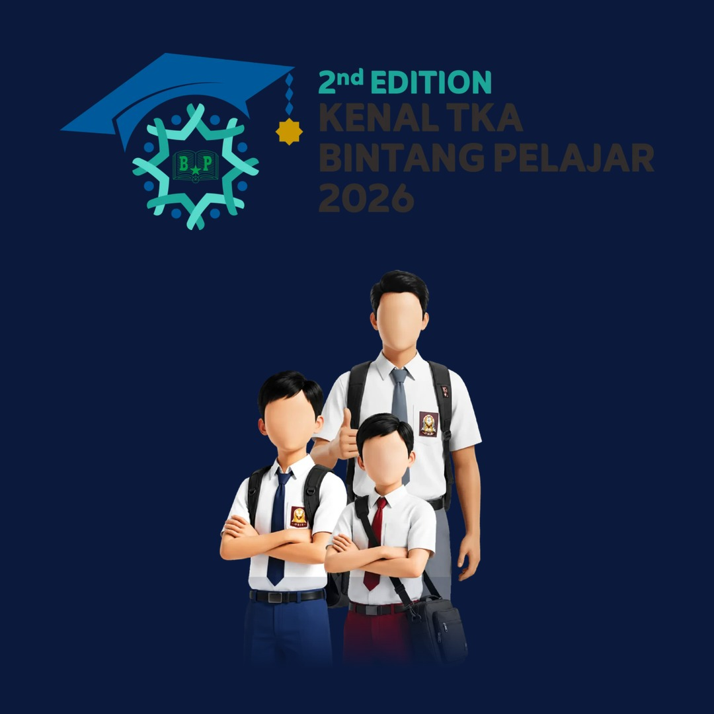

Yayasan Pendidikan Kristen Methodist Titus
SD SWASTA METHODIST - 11 MEDAN
JALAN BERLIAN SARI III NO. 151-A TELP. (061) 7880439
MEDAN 20147 SUMATERA UTARA – INDONESIA
PENGUMUMAN & PENDAFTARAN KOMPETISI AKADEMIK
Salam sejahtera untuk seluruh orang tua dan siswa-siswi SD Swasta Methodist-11 Medan. Dalam rangka mengasah potensi akademik serta mengukur kesiapan kemampuan literasi dan numerasi siswa di tingkat nasional, sekolah mengikutsertakan siswa-siswi Kelas 5 dan Kelas 6 SD dalam ajang bergengsi KENAL TKA BP 2026 yang diselenggarakan oleh Bintang Pelajar.
🎯 Ringkasan Informasi Penting
- Target Peserta: Siswa-siswi aktif Kelas 5 & 6 SD Methodist-11 (terdaftar Dapodik).
- Biaya Pendaftaran: GRATIS (100% tanpa biaya).
- Jadwal Ujian Sekolah: Selasa, 10 November 2026, Pukul 13.00 – 15.00 WIB (Jam 1 siang).
- Metode Pelaksanaan: Online / Daring dari mana saja (dapat dikerjakan dari rumah atau sekolah via PC/Laptop/Tablet/HP).
- Batas Pendaftaran Mandiri: Segera sebelum batas kuota sesi terpenuhi.
1. Materi & Format Ujian
Ujian dilaksanakan serentak dengan sistem CBT (Computer-Based Test) berbasis web langsung di platform resmi Bintang Pelajar:
- Mata Pelajaran: Bahasa Indonesia & Matematika
- Bentuk Soal: Pilihan Ganda (Online CBT)
- Waktu Ujian: Pukul 13.00 – 15.00 WIB (Sesi Tunggal)
2. Alur Pendaftaran Siswa (Daftar Mandiri)
- Buka tautan khusus pendaftaran SD Methodist-11:
https://event.bintangpelajar.com/register-kompetisi/MTQyOTk0LTEzMjAz ↗
- Isi data diri siswa secara lengkap dan pastikan alamat email aktif dicantumkan dengan benar.
- Setelah pendaftaran berhasil, sistem Bintang Pelajar akan mengirimkan akun (Username & Password) serta tautan akses ujian ke email masing-masing siswa.
- Simpan informasi akun tersebut untuk digunakan saat ujian pada 10 November 2026.
3. Persyaratan Perangkat & Teknis Ujian
Karena ujian dilakukan serentak pada satu sesi (jam 13.00 – 15.00 WIB):
- Peserta dapat mengerjakan dari rumah masing-masing dengan menggunakan laptop, komputer PC, tablet, ataupun ponsel pintar (smartphone).
- Pastikan perangkat terhubung dengan koneksi internet yang stabil selama durasi ujian.
- Gunakan browser Google Chrome atau Mozilla Firefox versi terbaru untuk kenyamanan optimal.
4. Tahapan Lomba & Hadiah Nasional
Kompetisi berjenjang mulai dari Babak Sekolah (Penyisihan) → Babak Provinsi → Semifinal → dan Final Nasional di Universitas Indonesia (UI).
Tersedia berbagai hadiah menarik di tingkat nasional meliputi sepeda motor, laptop, smartphone, piagam penghargaan, serta beasiswa bimbingan belajar.
Medan, 28 Oktober 2026
Kepala SD Swasta Methodist-11 Medan
Dra. Elly Rosana M.

Klik poster di atas untuk memperbesar.